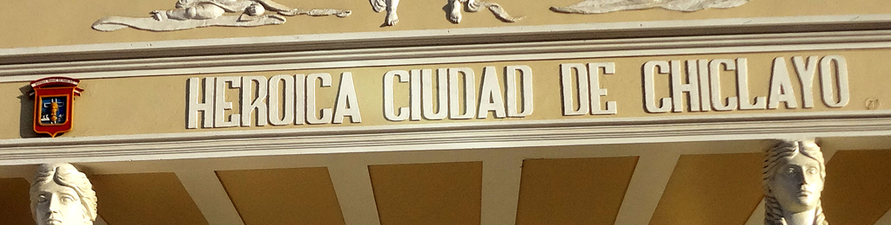

Chiclayo is the fourth largest city in Peru, and is home to approximately 738, 000 people. It’s the capitol of the Lambayeque region, and is just a few miles inland from the Pacific Ocean. It is commonly referred to as the “Capital of Friendship” as well as the “Pearl of the North” and the “Heroic City”.
History: Peru is famous for its rich history of ancient civilizations, the most memorable being the Incans– yet the Incans are just a small portion of their pre-colonial history. The Moche people flourished in northern Peru between 100 AD and 800 AD, and lasted almost 7 times as long as the Incans did.
Today, many pyramids (or “huacas”) remain in the Lambayeque region around Chiclayo, and have been home to many archeological digs. The Moche people left countless gold artifacts, ceramic masterpieces, jewelry, and other artifacts that are now on display in the museums in the area. Remnants of the Moche lifestyle also still exist today in some towns and villages around the city—everything from the legends to names of towns, foods, and language. The Lord of Sipán, the most notable discovery, is said to be the biggest find since King Tut, and was featured by the National Geographic.
The Lambayeque (or Sican) people emerged in the region right after the Moche culture, and also left many stunning pieces for archaeologists to find, living primarily in a nearby forest where they built many huacas. The Spanish colonized the area during the 16th century, as evidenced by much of the architecture in and around the area. In 1835, Chiclayo became an official city and is now divided into 6 urban districts.
Weather: In Chiclayo, there are two prominent seasons: the dry season and the wet season. The dry season is from May-August and is generally good weather for touring. The temperature during this time usually ranges from 73-80 F during the day, and 55-65 F at night. Chiclayo is close to the equator, it will be hot when the sun is visible, and you may need a light sweater when it’s not. The humidity is 73-84%, but usually isn’t bad unless it is really hot. August through December will maintain a temperature the mid or high 70s. During the wet season (December- May), it is often rainy and slightly more humid. The temperature ranges from 80-92 F during the day, and 64-68 F at night. The hottest month is usually March.
Tourism: As northern Peru is not as big of a hot-spot for tourists yet, a lot of it’s true culture is still intact. We highly recommend taking the time to travel to Chiclayo, as it has a lot to offer any type of tourist. From museums and archaeological sites to beaches, historic towns, and markets, the Chiclayo area provides a well-balanced pool of options. Not over-run by tourists, your stay will be pleasant and relaxing as you discover for yourself all that the area has to offer. Check out all the different sections of our website to find out a little more on why Chiclayo is your next destination!